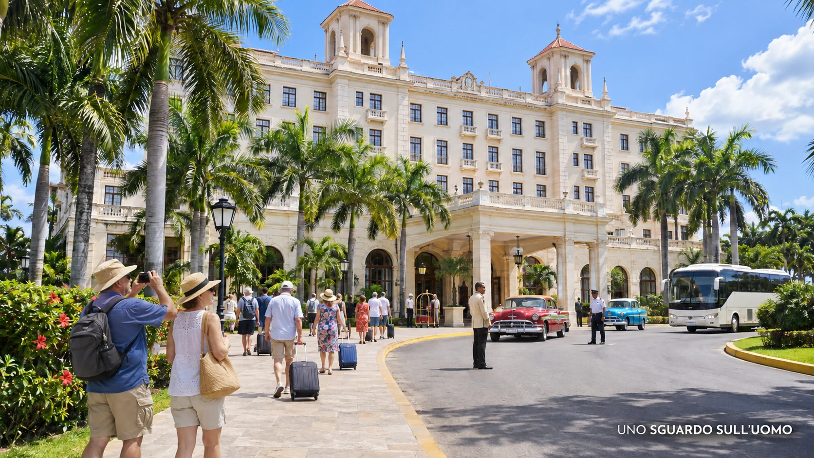

Cuba non è ridotta alla fame, ai blackout e all’esodo soltanto perché gli Stati Uniti la colpiscono con sanzioni dure e spesso crudeli. La pressione americana pesa, oggi più che mai; ma sessantasette anni di partito unico, repressione politica, economia militarizzata e investimenti sottratti ai servizi essenziali hanno trasformato una rivoluzione nata contro una dittatura in un sistema costruito per impedire qualsiasi alternativa. Lo Stato cubano investe nella propria sopravvivenza, non in quella del Paese.
In questo dossier
- La domanda che Di Battista non ha affrontato
- La rivoluzione promessa e le elezioni cancellate
- Batista non assolve Castro
- La repressione come sistema di governo
- Che cosa significa davvero embargo
- Dove finisce il denaro che entra a Cuba
- La Cuba che investe negli alberghi
- Otto dollari al mese nella città dei turisti
- Le tre Cuba della sanità
- Il blackout come consumo della vita
- Un Paese che vive di inerzia
- La rivoluzione che ha restituito prostituzione ed esilio
- La gabbia della conoscenza
- La solidarietà con Cuba che non ascolta i cubani
- Conclusione Il regime che governa il deterioramento
- Fonti
Questa indagine nasce da una scena. Il 7 novembre 2026, a Roma, la cubana Evelyn Cuervo affronta pubblicamente Alessandro Di Battista. Non gli contesta di essere stato operato a Cuba, né il diritto di raccontare la propria esperienza. Gli contesta di parlare del suo Paese senza nominare ciò che per lei viene prima di tutto: la libertà negata.
«Tu non stai difendendo il popolo cubano. Il popolo cubano vuole libertà. Sai cosa vuol dire? Quella che hai tu in Italia», gli dice. Di Battista risponde che per liberare Cuba devono andarsene i gringos. Cuervo insiste: «E la dittatura? Perché non dici una parola sulla dittatura?»
La prima reazione, anche per noi, è stata istintiva: la solita attivista estrema, la provocatrice che cerca una telecamera? Era possibile. Ma quella domanda aveva una forza che non dipendeva dalla simpatia per chi la pronunciava. Se l’embargo spiega tutto, perché il governo cubano non può essere criticato? Se il popolo è la ragione della rivoluzione, perché quel popolo non può scegliere un’alternativa politica? Se Cuba è povera soltanto perché Washington la strangola, perché lo Stato continua a costruire alberghi mentre ospedali, scuole, centrali elettriche e acquedotti si deteriorano?
Da quel momento la scena di Roma ha smesso di essere una lite. È diventata il fermo immagine dal quale ricostruire una storia lunga quasi settant’anni.
La domanda che Di Battista non ha affrontato
Di Battista conosce direttamente una parte della sanità cubana. Nel 2026, colpito da un tumore cerebrale, è stato trasferito all’ospedale Hermanos Ameijeiras dell’Avana, grande centro nazionale di riferimento, ed è stato operato con successo. Dopo il rientro ha raccontato anche la vecchiaia di alcune apparecchiature e la mancanza d’acqua. La sua testimonianza prova due cose insieme: a Cuba esistono ancora competenze mediche elevate; quelle competenze lavorano dentro un sistema materiale in profonda crisi.
Non serve trasformare Di Battista in un privilegiato da romanzo né negare ciò che ha visto. Il problema nasce quando un’esperienza personale viene usata per assolvere un intero sistema e ogni mancanza viene ricondotta a un solo colpevole esterno. Un ospedale di riferimento non coincide con l’ambulatorio di quartiere, con la farmacia vuota, con il malato cronico che cerca un antibiotico o con la famiglia che non sa come conservare l’insulina durante un blackout.
Nel 2026 l’Organizzazione panamericana della sanità descrive un sistema sotto pressione per carenze di energia, trasporti, farmaci e materiali. Il Fondo delle Nazioni Unite per l’infanzia (UNICEF) segnala che la scarsità di medicinali per alcuni tumori ematologici infantili ha ridotto la sopravvivenza. Human Rights Watch raccoglie testimonianze di scaffali vuoti, malnutrizione e attrezzature insufficienti. E nello stesso Paese i servizi medici esportati hanno generato per anni miliardi di dollari.
La contraddizione non è un dettaglio: Cuba ha formato medici, infermieri e tecnici in quantità straordinaria, ma il governo ha trasformato quella ricchezza umana in una fonte di valuta mentre la popolazione incontra difficoltà crescenti ad accedere a cure elementari. L’eccellenza esiste. Non è distribuita in modo uniforme e non basta a cancellare il collasso quotidiano.
La rivoluzione promessa e le elezioni cancellate
Nel luglio 1957 Fidel Castro firmò il Manifesto della Sierra Maestra. Non prometteva un partito unico eterno. Prometteva un governo provvisorio, il ripristino delle libertà civili e politiche e elezioni generali entro un anno dalla liberazione, sulla base della Costituzione del 1940 e del codice elettorale del 1943. La promessa era comprensibile: Fulgencio Batista aveva preso il potere con il colpo di Stato del 1952, cancellando il voto previsto e governando attraverso violenza, censura e corruzione.
La rivoluzione vinse anche perché si presentò come ritorno alla legalità tradita. Il 1° gennaio 1959 Batista fuggì. Nelle settimane successive la data delle elezioni cominciò a scivolare: diciotto mesi, poi due anni, poi un futuro indefinito. Quel voto competitivo non arrivò mai.
La difesa più comune sostiene che la Guerra fredda e l’ostilità americana costrinsero il nuovo governo a chiudersi. Le pressioni furono reali: la Baia dei Porci, i sabotaggi, i tentativi di assassinio contro Castro, l’Operazione Mongoose e la minaccia permanente degli Stati Uniti segnarono la storia dell’isola. Ma una minaccia esterna non trasforma automaticamente in democrazia il potere che imprigiona l’opposizione, elimina la stampa libera e impedisce ai cittadini di cambiare governo.
Il passaggio decisivo fu politico. Le organizzazioni rivoluzionarie vennero progressivamente fuse, subordinate e infine assorbite nel Partito comunista di Cuba (PCC). Il potere legislativo fu esercitato dal Consiglio dei ministri; i partiti indipendenti scomparvero; l’opposizione divenne sinonimo di controrivoluzione. La famiglia Castro rimase al vertice dello Stato dal 1959 al 2018, prima con Fidel e poi con Raúl. Dopo di loro la continuità non è familiare nel cognome del presidente, ma è istituzionale nel partito che decide chi può governare.
La Costituzione del 2019 non nasconde questa architettura. L’articolo 5 definisce il PCC, unico, come la forza politica dirigente superiore della società e dello Stato. Non esiste un’opposizione legale che possa presentarsi per sostituirlo. Esistono candidature locali filtrate, organismi eletti e consultazioni; non esiste la possibilità essenziale di una democrazia: mandare a casa chi governa e scegliere un progetto alternativo.
Batista non assolve Castro
Cuba prima della rivoluzione non era un paradiso. L’Avana degli alberghi, dei casinò e dei capitali statunitensi conviveva con campagne povere, disoccupazione stagionale, disuguaglianze razziali, prostituzione, analfabetismo e dipendenza dallo zucchero. La mafia investiva nel gioco e nella vita notturna; Batista proteggeva affari e interessi privati mentre la repressione colpiva gli oppositori.
Ma proprio questa realtà rende più grave il tradimento successivo. Castro non si presentò come fondatore di una dittatura migliore. Promise di restituire il potere al popolo. La rivoluzione alfabetizzò, ampliò l’accesso alla sanità, ridusse antiche disuguaglianze e costruì capitale umano. Poi trasformò quei risultati in legittimazione permanente: poiché avevamo istruito e curato il popolo, sembrò dire il regime, nessuno avrebbe più avuto il diritto di sostituirci.
L’isola possedeva e possiede potenzialità evidenti: posizione geografica, porti, clima, terre coltivabili, patrimonio urbano, cultura, capacità professionali e una delle immagini turistiche più forti dei Caraibi. Il progetto mafioso di una Las Vegas tropicale non era una promessa di giustizia sociale; era però la prova brutale che i capitali vedevano un valore economico enorme. Il problema non è rimpiangere i casinò. È capire come un Paese con tali risorse sia arrivato a importare gran parte del cibo, a perdere la propria capacità produttiva e a pagare salari che, al cambio realmente usato dalla popolazione, valgono pochi dollari.
Batista e Castro non sono identici. La loro origine, la politica internazionale e il patto sociale sono diversi. Ma la differenza non cancella il nucleo comune: un potere non sottoposto alla possibilità di essere rimosso. La dittatura combattuta dalla rivoluzione non può diventare l’alibi della dittatura costruita dalla rivoluzione.
La repressione come sistema di governo
Il regime non ha conservato il potere soltanto grazie al consenso. Lo ha fatto attraverso tribunali rivoluzionari, esecuzioni, carcere, esilio, controllo dei comitati di quartiere, licenziamenti, schedature, censura e paura. Nei primi anni centinaia di persone furono fucilate dopo processi rapidi. Molti imputati erano funzionari e uomini di Batista accusati di torture e omicidi; questo non elimina il problema delle garanzie, della pena di morte usata come spettacolo politico e dell’estensione successiva della repressione a chi non aveva commesso crimini violenti.
A metà degli anni Sessanta lo stesso Fidel Castro riconobbe una popolazione carceraria vicina alle ventimila persone, anche se le categorie utilizzate e il numero dei detenuti strettamente politici restano discussi. Tra il 1965 e il 1968 le Unità militari di aiuto alla produzione (UMAP) trasformarono campi agricoli militarizzati in luoghi di lavoro forzato e rieducazione. Vi finirono omosessuali, cristiani praticanti, testimoni di Geova, seminaristi, obiettori e giovani considerati non conformi. I cristiani furono colpiti nella scuola, nelle professioni, nell’accesso al partito; sacerdoti e religiosi furono espulsi, istituti cattolici nazionalizzati.
La persecuzione degli omosessuali non può essere cancellata dal successivo cambiamento delle leggi. Cuba ha legalizzato il matrimonio egualitario nel 2022 e la condizione giuridica delle persone lesbiche, gay, bisessuali e transgender (LGBT) è oggi diversa da quella dei campi UMAP. È un progresso reale. Non restituisce gli anni rubati a chi fu internato, umiliato o costretto all’esilio, e non rende libero l’attivismo indipendente quando entra in conflitto con il potere.
Nel 1971 il caso del poeta Heberto Padilla mostrò al mondo intellettuale la natura del controllo culturale: arresto, interrogatorio e un’autocritica pubblica che ricordava i rituali staliniani. Nel 1980 il porto di Mariel divenne una valvola di espulsione e di disprezzo: oltre centomila persone furono indicate come gusanos, vermi, e spinte a partire tra atti di ripudio organizzati.
Nel marzo 2003, durante la Primavera nera, settantacinque giornalisti, bibliotecari, sindacalisti e dissidenti ricevettero condanne fino a ventotto anni. Amnesty International li riconobbe come prigionieri di coscienza. Nel luglio 2021, quando proteste spontanee attraversarono decine di città gridando libertà e denunciando fame, mancanza di medicine e blackout, la risposta fu nuovamente la stessa: arresti, processi a porte chiuse, pene per sedizione e reati contro l’ordine pubblico.
Il Consiglio dell’Unione europea parlò di circa 1.400 arresti e centinaia di incriminazioni dopo l’11 luglio. Human Rights Watch documentò detenzioni arbitrarie, maltrattamenti e la scelta imposta a numerosi oppositori: prigione o esilio. Nell’ottobre 2026 Prisoners Defenders registrava 1.353 prigionieri politici, tra i quali 158 donne e decine di persone arrestate quando erano minorenni. È una rilevazione indipendente, non una lista riconosciuta dal governo; proprio l’assenza di trasparenza statale rende necessarie queste ricostruzioni.
La repressione cubana contemporanea non ha bisogno di riempire ogni strada di soldati. Funziona attraverso la selezione: una condanna esemplare, una convocazione della sicurezza, la perdita del lavoro, il divieto di viaggiare, una casa sorvegliata, una famiglia minacciata. La maggioranza impara il confine senza che il confine debba essere spiegato ogni giorno.
Che cosa significa davvero embargo
Cuba non è sottoposta a un blocco navale e non è isolata dal commercio mondiale. Compra e vende con più di cento Paesi. Nel 2024 gli scambi di beni con l’Unione europea hanno raggiunto circa 1,7 miliardi di euro. Tra i principali partner dell’isola figurano Spagna, Cina, Venezuela, Canada, Brasile, Messico e Russia. Persino dagli Stati Uniti arrivano prodotti autorizzati, soprattutto alimentari, medicinali e beni umanitari.
L’embargo americano esiste, pesa sull’economia e rende più costosi pagamenti, finanziamenti, trasporti e forniture. Penalizza le operazioni che coinvolgono il sistema finanziario statunitense, scoraggia banche e imprese straniere e limita l’accesso al credito internazionale. È una forma di pressione economica contro il governo cubano, non un divieto assoluto di commerciare e non la spiegazione universale di tutto ciò che non funziona sull’isola.
Nel 2026 l’amministrazione Trump ha ulteriormente irrigidito questa pressione, colpendo anche i flussi energetici dai quali Cuba dipende. La strategia è evidente: esasperare la crisi per costringere il governo alla resa o alla transizione. Washington sa che il costo immediato ricade anche sulle famiglie e accetta quella sofferenza come strumento politico. Questo rende la politica americana cinica, ma non trasforma il regime cubano in una vittima innocente.
L’embargo non ha costruito le centrali obsolete. Non ha imposto al governo di abbandonare l’agricoltura, lasciare deteriorare gli acquedotti o destinare il 37,4 per cento degli investimenti statali del 2024 alle attività legate al turismo, agli alberghi e alla ristorazione. Non impedisce di pubblicare i bilanci del conglomerato militare GAESA. Non arresta i manifestanti, non censura i giornalisti e non vieta la nascita di partiti politici indipendenti.
Soprattutto, l’embargo non è privo di una via d’uscita politica. La legge Helms-Burton del 1996 indica le condizioni necessarie per avviare la sospensione delle principali sanzioni: liberazione dei prigionieri politici, legalizzazione dell’opposizione, scioglimento degli apparati repressivi, libertà sindacale, indipendenza della magistratura ed elezioni multipartitiche entro diciotto mesi, con accesso equo ai mezzi di comunicazione e osservatori internazionali.
La legge comprende anche la questione delle proprietà confiscate e tutela interessi economici americani. Ma il suo nucleo politico non impone un presidente scelto da Washington: chiede che il popolo cubano possa scegliere fra candidati e forze politiche differenti. Le elezioni, da sole, non cancellerebbero automaticamente ogni misura, perché la rimozione definitiva dipenderebbe anche dal presidente e dal Congresso degli Stati Uniti. Il governo cubano, tuttavia, non ha mai compiuto neppure i primi passi che metterebbero Washington davanti alle proprie responsabilità.
Se l’embargo fosse davvero la causa principale della sofferenza del popolo, un governo interessato prima di tutto ai cittadini avrebbe una strada precisa: liberare i detenuti politici, riconoscere l’opposizione, consentire una stampa indipendente e convocare elezioni libere. Potrebbe costringere gli Stati Uniti a scegliere se mantenere le sanzioni anche dopo la democratizzazione, smascherandone definitivamente le intenzioni. Non lo fa perché il prezzo della soluzione sarebbe la fine del monopolio politico.
La dirigenza cubana non teme soltanto di perdere le elezioni. Teme il giorno dopo. Una transizione reale potrebbe aprire gli archivi, rendere controllabili i bilanci militari, mostrare patrimoni e privilegi, ricostruire le responsabilità della repressione e restituire la parola alle vittime. Dopo quasi settant’anni, lasciare il governo non significherebbe semplicemente sedersi all’opposizione: per alcuni potrebbe significare perdere l’impunità e rispondere politicamente, storicamente o giudiziariamente delle proprie azioni.
È la trappola costruita dal regime per se stesso. Più reprime per sopravvivere, più diventa pericoloso abbandonare il potere. Ogni nuovo abuso aumenta la necessità di controllare magistratura, esercito, polizia, stampa, imprese e archivi. Il sistema militare ed economico sono ormai intrecciati: democratizzare Cuba significherebbe togliere alla classe dirigente non soltanto il comando dello Stato, ma anche il controllo delle attività che producono valuta e privilegi.
L’embargo è così diventato utile a entrambe le strutture di potere. Washington utilizza la sofferenza dei cubani per piegare il governo. Il governo utilizza quella stessa sofferenza per attribuire ogni fallimento al nemico, definire l’opposizione come tradimento e giustificare militarizzazione e segretezza. Il popolo rimane prigioniero tra due interessi. Ma soltanto uno dei due governa direttamente Cuba, controlla le carceri, decide come investire il denaro pubblico e potrebbe restituire ai cittadini il diritto di scegliere.
La conclusione è netta: l’embargo impoverisce Cuba, ma il regime conserva deliberatamente le condizioni politiche che lo mantengono. La classe dirigente preferisce comandare un Paese impoverito piuttosto che rischiare di diventare una minoranza politica in un Paese libero e dover rispondere di ciò che ha fatto per restare al potere.
Dove finisce il denaro che entra a Cuba
Per capire Cuba bisogna evitare un errore frequente: confondere il prodotto interno lordo con i dollari che entrano attraverso alcune filiere. L’isola riceve valuta da turismo, esportazione di servizi professionali, nichel, tabacco, farmaci, denaro inviato dagli emigrati alle famiglie e altri scambi. Sono flussi diversi, non un unico incasso disponibile. Una parte paga importazioni, carburante, debiti, trasporti e costi operativi; una parte non passa dal bilancio pubblico; una parte resta nelle imprese e nei circuiti in valuta.
Ciò non risolve la contraddizione. I servizi sanitari all’estero hanno prodotto miliardi di dollari l’anno. Il turismo, anche in crisi, ha continuato a muovere valuta. Il denaro inviato dagli emigrati sostiene alimentazione, abitazioni e piccole attività. Se una popolazione di meno di dieci milioni di residenti dispone di medici, coste, città storiche, diaspora e relazioni commerciali globali, non è credibile attribuire ogni fallimento alla mancanza assoluta di risorse.
Il nodo è come quelle risorse vengono amministrate e chi può controllarle. Una parte decisiva dell’economia in valuta è concentrata nel Grupo de Administración Empresarial S.A. (GAESA), conglomerato legato alle Forze armate che opera in turismo, commercio, logistica, finanza e trasferimenti di denaro. La sua dimensione è nota; i suoi conti completi non sono sottoposti a un controllo pubblico comparabile a quello di una democrazia.
Documenti finanziari trapelati nel 2025 hanno suggerito disponibilità molto elevate in alcune società del gruppo. Le cifre complessive e la loro interpretazione sono state contestate da economisti che distinguono liquidità, depositi, attività e fondi realmente spendibili. Non abbiamo bisogno di trasformare una fuga di documenti in una sentenza definitiva. Il fatto essenziale è già provato: il settore più redditizio e strategico è opaco, protetto dal potere militare e sottratto a un controllo indipendente.
Corruzione e privilegio non significano necessariamente una valigia di contanti consegnata a ogni funzionario. Esistono nella possibilità di assegnare immobili, autorizzazioni, importazioni, valute, auto, viaggi, attività turistiche e accesso alle reti che producono dollari. In un’economia dove lo Stato decide quasi tutto, il permesso diventa capitale. Chi controlla il permesso controlla la ricchezza.
La Cuba che investe negli alberghi
Nel 2024 Cuba ha destinato il 37,4 per cento degli investimenti statali alle attività collegate a servizi imprenditoriali, immobiliari, alberghi e ristorazione. Sanità e assistenza sociale hanno ricevuto circa 1,98 miliardi di pesos; l’istruzione meno di un miliardo; l’agricoltura circa 2,67 miliardi. Il turismo ha assorbito molte volte quelle cifre mentre gli alberghi occupavano mediamente meno di una stanza su quattro.
La Torre K dell’Avana, nuovo albergo di lusso alto oltre cento metri, è diventata il simbolo di questa scelta. Non è la prova che ogni investimento turistico sia sbagliato: Cuba ha bisogno di valuta e il turismo può generare lavoro. È la prova che il governo continua a proteggere il circuito dal quale ricava moneta forte anche quando scuole, ospedali e centrali chiedono interventi urgenti.

Il turista vede una Cuba selezionata. Aeroporto, autobus, resort, spiaggia, centro storico restaurato, ristorante in valuta e casa particular prenotabile compongono un corridoio economico. Quel corridoio non è falso: esiste davvero. È però la parte del Paese che deve funzionare perché produce dollari. A pochi isolati possono mancare acqua, illuminazione, raccolta dei rifiuti e cibo refrigerato.
La casa particular viene spesso raccontata come ingresso diretto nella vita del cubano comune. In alcuni casi lo è; molte famiglie hanno creato attività reali e dignitose, anche grazie al denaro di parenti emigrati. Ma aprire una struttura richiede un immobile adatto, capitale, autorizzazioni, connessione alle piattaforme, biancheria, acqua, alimenti e capacità di incassare in valuta. Il povero che vive del salario statale parte molto più indietro. Il nome particular non rende automaticamente popolare il patrimonio che produce venticinque o quaranta dollari a notte.
Non serve affermare che tutte queste case appartengano alla casta. Basta osservare la selezione economica: chi possiede già una casa centrale o riceve capitale dall’estero può entrare nel circuito; chi non possiede nulla continua a guardare il turista spendere in una notte più di quanto lui guadagni in mesi.
Otto dollari al mese nella città dei turisti
Nel 2025 il salario medio mensile ufficiale era 6.930 pesos cubani (CUP). All’inizio di novembre 2026 il dollaro nel mercato informale oscillava intorno a novecento pesos. Il salario medio valeva quindi meno di otto dollari al cambio con cui molte famiglie misuravano realmente il potere d’acquisto. Il salario minimo di 2.100 pesos valeva ancora meno.
Questa conversione non significa che un lavoratore debba acquistare ogni bene in dollari o che il suo intero consumo segua automaticamente quel cambio. Alcuni servizi restano sovvenzionati, esistono razioni e prezzi amministrati. Significa però che, appena il cittadino deve comprare qualcosa nel mercato non sovvenzionato o legato all’importazione, la distanza diventa mostruosa. Una cena da venti dollari, una camera da trenta, un pieno di carburante o un elettrodomestico non appartengono alla stessa economia del salario statale.
È qui che compaiono le caste, non necessariamente scritte in un registro. C’è chi vive del salario in pesos. C’è chi riceve denaro dall’estero. C’è chi lavora con i turisti e incassa mance o valuta. C’è chi gestisce attività private. C’è chi appartiene agli apparati dello Stato e accede a case, auto, negozi, incarichi e reti precluse agli altri. Due persone con la stessa istruzione possono abitare mondi economici incompatibili.
La rivoluzione che prometteva di eliminare i privilegi ha costruito un privilegio più difficile da contestare, perché non nasce soltanto dalla proprietà privata: nasce dall’accesso politico. In un Paese normale, l’operaio può organizzarsi, scioperare, cambiare partito, creare un sindacato, votare contro il governo. A Cuba il sindacato indipendente e l’opposizione organizzata non sono strumenti disponibili. La povertà materiale è aggravata dall’impotenza politica.
Le tre Cuba della sanità
La sanità cubana non è una finzione. La formazione medica, la prevenzione e la capacità di intervenire in contesti difficili sono risultati storici riconosciuti. Proprio per questo il deterioramento è così doloroso: un Paese con un capitale professionale enorme lascia che farmaci, apparecchiature, edifici, trasporti e salari consumino quel capitale.
Nella pratica esistono almeno tre livelli. Il primo è la sanità quotidiana del cittadino: consultori, policlinici, ospedali provinciali e farmacie segnati da carenze. Il secondo comprende i grandi centri nazionali di riferimento, nei quali si concentrano specialisti e tecnologie e dove è stato curato anche Di Battista. Il terzo è il circuito internazionale e in valuta, con strutture destinate a stranieri, diplomatici e pazienti paganti, come la clinica Cira García e altri centri indicati dalle ambasciate.
I confini non sono assoluti: un cubano può essere inviato in un centro di eccellenza, un ospedale importante può restare senza acqua, uno straniero può incontrare disservizi. Ma la differenza di accesso e di risorse esiste. La domanda non è se Cuba sappia operare un tumore. La domanda è perché quella stessa organizzazione non garantisca con regolarità un antibiotico, una siringa, una dialisi o un frigorifero acceso a tutta la popolazione.
L’esportazione dei medici aggiunge un’altra frattura. Nel 2022 i servizi di salute e assistenza sociale all’estero avrebbero generato quasi 4,9 miliardi di dollari, oltre due terzi delle esportazioni di servizi. Le missioni hanno curato milioni di persone e dato esperienza e reddito a molti professionisti. Ma organismi internazionali e testimonianze hanno denunciato trattenute elevate sui compensi, controllo dei passaporti, sorveglianza e sanzioni contro chi abbandona la missione. Il medico diventa contemporaneamente ambasciatore, lavoratore e fonte di valuta dello Stato.
Il blackout come consumo della vita
Cuba possiede centrali elettriche. Molte sono vecchie centrali termoelettriche alimentate con combustibili petroliferi pesanti, costose da mantenere e sottoposte a guasti continui. Le sanzioni e la mancanza di valuta rendono più difficile comprare combustibile, ricambi e tecnologia; le scelte di investimento e decenni di manutenzione insufficiente hanno lasciato la rete senza riserva. Quando una grande unità si ferma, non esiste abbastanza capacità per sostituirla.
Un blackout non è semplicemente una stanza buia. Significa pompa dell’acqua ferma, frigorifero spento, cibo che si deteriora, telefono scarico, ventilatore immobile nel caldo tropicale, ascensore inutilizzabile, officina chiusa, connessione interrotta, ospedale sui generatori e scuola incapace di lavorare. Chi non ha un generatore non può fabbricare il freddo che gli serve per conservare ciò che è riuscito a comprare.
Nel 2026 testimonianze raccolte dalla stampa descrivono persone che restano sveglie aspettando poche ore di corrente all’alba per lavare, cucinare, ricaricare telefoni e batterie. La frase più terribile non riguarda il buio, ma il sonno: non riesco a dormire sapendo che potrebbe arrivare l’elettricità. È una pressione psicologica continua. Anche quando la luce torna, il cittadino non riposa; corre a comprimere una giornata intera dentro una finestra imprevedibile.
Le aree turistiche vengono protette più a lungo perché generano valuta. Reuters ha documentato nel 2024 come Varadero conservasse l’elettricità mentre zone circostanti subivano interruzioni prolungate. Ancora una volta, non è una fantasia costruita contro Cuba: è la logica dichiarata di un sistema che sacrifica il consumo ordinario per mantenere in vita la propria fonte di dollari.
Questa condizione appare medievale non perché manchi la tecnologia nel mondo, ma perché il cittadino la vede, sa che esiste e non può usarla. Il blackout è la forma materiale del regime: una vita moderna amministrata come emergenza permanente.
Un Paese che vive di inerzia
Cuba continua a produrre persone istruite. Ma sempre più spesso non è lo Stato presente a sostenere l’istruzione: è l’istruzione costruita dalle generazioni precedenti che, per inerzia, continua a sostenere lo Stato. Nel 2026 l’Organizzazione delle Nazioni Unite per l’educazione, la scienza e la cultura (UNESCO) segnalava oltre duemila scuole bisognose di interventi urgenti e un deficit vicino a ventiseimila insegnanti. La copertura del personale era intorno al 73 per cento; studenti universitari, pensionati e professionisti venivano chiamati a colmare i vuoti.
L’inerzia è una ricchezza che si consuma. Un medico formato trent’anni fa continua a curare; un insegnante tiene aperta una classe; un tecnico fa ripartire una centrale con pezzi recuperati; una famiglia conserva libri, disciplina e aspettative. Questo può far sembrare resiliente un sistema che in realtà sta spendendo il capitale umano senza ricostituirlo.
Lo stesso vale per edifici, acquedotti, strade e rete elettrica. Il regime mantiene la repressione e protegge i settori che producono valuta; il resto viene riparato finché è possibile. Non governa lo sviluppo, governa il deterioramento. Assicura che il crollo non raggiunga troppo in fretta gli alberghi, gli apparati e i luoghi dai quali ricava denaro e controllo.
La rivoluzione che ha restituito prostituzione ed esilio
La rivoluzione presentò la prostituzione dell’Avana di Batista come simbolo della dipendenza e dello sfruttamento. Negli anni Novanta, con la fine dell’Unione Sovietica e l’apertura disperata al turismo, il jineterismo tornò a occupare le strade e l’immaginario. Donne e uomini cercavano valuta, relazioni, regali, pasti e una possibile uscita dall’isola.
Non ogni giovane che parla con un turista vende sesso; non ogni sex worker è vittima di tratta. Confondere tutto significa cancellare le persone. Ma gli studi sul Periodo speciale, le segnalazioni del Comitato per l’eliminazione della discriminazione contro le donne e i casi di sfruttamento minorile documentati mostrano che turismo, disuguaglianza valutaria e vulnerabilità hanno ricostruito un mercato che la rivoluzione sosteneva di avere eliminato.
La responsabilità morale non appartiene alle donne che cercano di sopravvivere. Appartiene a un’economia che rende il corpo uno dei pochi beni immediatamente convertibili in dollari e a uno Stato che punisce, controlla o nasconde il fenomeno senza rimuoverne le cause.
L’altra via di uscita è l’esilio. La popolazione effettiva, secondo l’Ufficio nazionale di statistica e informazione (ONEI), è scesa a circa 9,43 milioni alla fine del 2025, oltre trecentomila persone in meno in un solo anno e circa 1,68 milioni in meno rispetto al 2022. Più di un quarto dei residenti ha almeno sessant’anni. Dal 2021 centinaia di migliaia di cubani hanno raggiunto gli Stati Uniti attraverso rotte legali e irregolari; altri sono andati in Spagna, Messico, America Latina e altrove.
Il fatto che milioni restino non dimostra che accettino il regime. Partire costa denaro, documenti, contatti, rischio e separazione. Ci sono anziani da assistere, figli, case, paura del viaggio e speranza che qualcosa cambi. L’ultimo privilegio cubano è potersene andare.
La gabbia della conoscenza
Cuba non è isolata dal tempo. Internet è costoso, controllabile e vulnerabile ai blackout, ma esiste. I telefoni mostrano Miami, Madrid, Messico, Santo Domingo e le vite degli emigrati. I turisti camminano con un potere d’acquisto inconcepibile per un lavoratore statale. Le famiglie ricevono foto, video, pacchi e denaro dall’estero.
La vera tortura moderna è conoscere il benessere e non poterlo vivere. Il cubano istruito sa come funziona un ospedale efficiente, cosa può produrre un’impresa, quanto vale il suo lavoro, come si viaggia e come si vota altrove. Non vive nell’ignoranza di un mondo chiuso: vive nella distanza quotidiana tra ciò che comprende e ciò che gli è permesso.
Questa è la gabbia per uccelli tropicali. Il paesaggio resta magnifico, la popolazione è colta, creativa e capace, la musica continua, le strade sono piene di giovani. Ma il futuro è amministrato da un sistema che consente di vedere l’uscita e punisce chi tenta di aprirla politicamente.
La solidarietà con Cuba che non ascolta i cubani
È qui che la discussione torna in Italia. Una parte riconoscibile della sinistra continua a guardare Cuba prima come simbolo e solo dopo come Paese reale. Il Che sulle magliette, Fidel come comandante, la sanità internazionalista, l’anti-imperialismo e la resistenza agli Stati Uniti formano una narrazione così potente da rendere secondarie le persone che disturbano il mito.
Nell’agosto 2026 Rifondazione comunista ha rinnovato all’Avana il legame storico con la rivoluzione e la riconoscenza verso Fidel Castro. Altri esponenti del centrosinistra hanno riconosciuto limitazioni delle libertà democratiche, ma hanno riportato il discorso quasi subito sull’embargo e sulla gratitudine per i medici cubani. Nel giugno 2026 numerosi eurodeputati italiani del Partito democratico, del Movimento 5 Stelle, dei Verdi e della sinistra hanno votato contro una risoluzione di condanna e sanzioni sul caso dei prigionieri politici. Si può contestare l’uso delle sanzioni senza negare la repressione; troppo spesso, però, la prima obiezione diventa il modo per non pronunciare la seconda verità.
Di Battista non è responsabile delle scelte del governo cubano e non è colpevole di essersi fatto curare. Diventa politicamente contestabile quando usa la propria esperienza per spiegare ai cubani quale sia la causa della loro sofferenza e rimuove dalla scena la dittatura che una cubana gli sta indicando. Evelyn Cuervo non chiedeva di amare Trump. Chiedeva di nominare il potere che può arrestarla, censurarla e impedirle di votare contro di esso.
Questa rimozione ha un nome politico: omertà ideologica. Non è l’omertà del codice penale né la prova di un accordo segreto. È il silenzio selettivo di chi conosce i fatti, ma teme che ammetterli distrugga un simbolo identitario. Le persecuzioni dei cristiani, degli omosessuali, degli intellettuali e degli oppositori non erano invisibili. La Primavera nera non era invisibile. Le condanne dopo l’11 luglio non sono invisibili. I prigionieri del 2026 non sono invisibili.
Quando l’ignoranza non è più possibile, la giustificazione diventa complicità e il silenzio diventa omertà. La solidarietà con Cuba che non ascolta i cubani è solidarietà con il regime, non con il popolo.
Conclusione Il regime che governa il deterioramento
L’embargo ferisce Cuba. Le politiche di Washington hanno spesso trattato la sofferenza della popolazione come leva negoziale. Gli interventi americani hanno dato al regime un nemico reale, utile a spiegare ogni fallimento e a delegittimare ogni dissenso. Questa responsabilità deve essere scritta senza esitazioni.
Ma sessantasette anni cancellano l’alibi dell’emergenza provvisoria. Il governo cubano ha avuto decenni di sostegno sovietico, relazioni con Europa, Canada, Cina, Venezuela, Russia e gran parte del mondo; ha esportato medici, ricevuto turisti, coltivato una diaspora e costruito imprese in valuta. Ha anche scelto il partito unico, represso l’opposizione, protetto l’opacità militare, investito negli alberghi mentre i servizi essenziali crollavano e rifiutato il percorso politico che potrebbe mettere in discussione le sanzioni.
Il comunismo cubano diventa un cancro non perché ogni ideale di uguaglianza conduca inevitabilmente alla miseria, ma perché il sistema ha trasformato la propria sopravvivenza nel fine superiore. Ha consumato il corpo che sosteneva: infrastrutture, lavoro, agricoltura, sanità, scuola, fiducia e futuro. Conserva le cellule del potere mentre indebolisce l’organismo del Paese.
Cuba non è povera di intelligenza, bellezza, posizione, risorse umane o possibilità. È povera di libertà politica e di istituzioni capaci di obbligare chi governa a rispondere dei risultati. Finché il cittadino non potrà organizzarsi, controllare i conti, creare un’opposizione e sostituire il governo, ogni dollaro potrà essere amministrato senza responsabilità e ogni fallimento potrà essere attribuito al nemico.
La donna che ha fermato Di Battista a Roma non ci ha consegnato una risposta completa. Ha fatto qualcosa di più importante: ha impedito che la domanda venisse ancora una volta soffocata dall’embargo. Perché non dici una parola sulla dittatura? Dopo aver seguito il denaro, la storia, le carceri, gli ospedali, gli alberghi, le scuole e i blackout, la risposta è ormai evidente. Perché nominare la dittatura costringe a riconoscere che il popolo cubano non è soltanto vittima degli Stati Uniti. È ostaggio del potere che afferma di rappresentarlo.
FONTI
- Le fonti sono indicate con ente o autore, titolo e data. Gli indirizzi utilizzati per la verifica restano nel materiale di lavoro e non vengono mostrati nel dossier, secondo le regole editoriali della testata.
- 14ymedio, “Exiliados cubanos increpan en Roma al ‘Che italiano’ por su silencio sobre la dictadura”, 9 novembre 2026.
- Alessandro Di Battista, dichiarazioni pubbliche sull’intervento all’ospedale Hermanos Ameijeiras e sulle condizioni della struttura, settembre-novembre 2026.
- ANSA, “Alessandro Di Battista operato a Cuba per un tumore al cervello”, 9 settembre 2026.
- Fidel Castro e opposizione civica cubana, Manifesto della Sierra Maestra, 12 luglio 1957.
- Senato degli Stati Uniti, Committee on the Judiciary, Castro’s Broken Pledges, 1970.
- Repubblica di Cuba, Costituzione della Repubblica, articolo 5, 2019.
- Amnesty International, Cuba: ‘Essential measures’? Human rights crackdown in the name of security, 2003.
- Lillian Guerra, “Gender policing, homosexuality and the new patriarchy of the Cuban Revolution”, studi sulle UMAP e sulla repressione dei non conformi.
- Human Rights Watch, Prison or Exile: Cuba’s Systematic Repression of July 2021 Demonstrators, 11 luglio 2022.
- Consiglio dell’Unione europea, dichiarazione sulle condanne dei manifestanti dell’11 luglio 2021, 30 marzo 2022.
- Prisoners Defenders, rapporto mensile sui prigionieri politici a Cuba, chiusura ottobre 2026, pubblicato 12 novembre 2026.
- Congresso degli Stati Uniti, Cuban Liberty and Democratic Solidarity Act – Public Law 104-114, 12 marzo 1996.
- Dipartimento del Tesoro degli Stati Uniti, Office of Foreign Assets Control, Cuba Sanctions Program and Country Information, consultazione novembre 2026.
- Commissione europea, European Union trade relations with Cuba – factsheet 2024, aggiornamento 2025.
- Nazioni Unite, Necessity of ending the economic, commercial and financial embargo imposed by the United States of America against Cuba, rapporto del Segretario generale A/80/83, 2025.
- Ufficio nazionale di statistica e informazione, Anuario Estadístico de Cuba e dati sul commercio estero, edizioni 2024-2026.
- EFE, “Cuba invirtió en 2024 más en turismo que en educación y sanidad”, 24 marzo 2025.
- Associated Press, reportage sul nuovo albergo di lusso Torre K all’Avana durante la crisi economica ed energetica, 2025.
- U4 Anti-Corruption Resource Centre, Cuba: Overview of corruption and anti-corruption, 2025.
- Miami Herald, inchiesta sui documenti finanziari interni di GAESA e Gaviota, 6 agosto 2025.
- Association for the Study of the Cuban Economy, analisi critica delle interpretazioni dei documenti finanziari di GAESA, 2025.
- Ufficio nazionale di statistica e informazione, Salario medio en cifras. Cuba 2025, pubblicato 2026.
- elTOQUE, Tasa Representativa del Mercado Informal, rilevazioni novembre 2026.
- Commissione interamericana dei diritti umani, rapporto sulle missioni mediche cubane e sui diritti del personale sanitario, 2026.
- UNICEF, Country Programme Document Cuba 2026-2030, 2026.
- Organizzazione panamericana della sanità e Organizzazione mondiale della sanità, Cuba: situazione sanitaria ed effetti della crisi energetica e logistica, 2026.
- Human Rights Watch, “Buscando Vida”: The Human Rights Cost of Cuba’s Economic Crisis, 7 luglio 2026.
- Reuters, reportage sulla crisi della rete elettrica cubana, sulle centrali obsolete e sui blackout, agosto-ottobre 2024.
- Associated Press, reportage sull’impatto psicologico e sociale dei blackout prolungati a Cuba, 9 settembre 2026.
- UNESCO, sostegno alla continuità educativa a Cuba durante la crisi, 17 febbraio 2026.
- Associated Press, reportage sulla riapertura delle scuole cubane e sulla carenza di insegnanti, 1 settembre 2026.
- Ufficio nazionale di statistica e informazione, Indicadores demográficos de Cuba y sus territorios 2025, luglio 2026.
- Congressional Research Service, Cuba: U.S. Policy Overview, aggiornamenti 2024-2026.
- Carrie Hamilton, Sexual Revolutions in Cuba: Passion, Politics, and Memory, 2012.
- Comitato delle Nazioni Unite per l’eliminazione della discriminazione contro le donne, osservazioni conclusive su Cuba, ottobre 2024.
- Dipartimento di Stato degli Stati Uniti, Trafficking in Persons Report: Cuba, 2025.
- Partito della Rifondazione Comunista, comunicato sulla visita della delegazione a Cuba, 8 agosto 2026.
- Camera dei deputati, interventi parlamentari italiani sulla crisi cubana, l’embargo e le libertà democratiche, 2026.
- ANSA, resoconto del voto del Parlamento europeo sui prigionieri politici cubani, 18 giugno 2026.